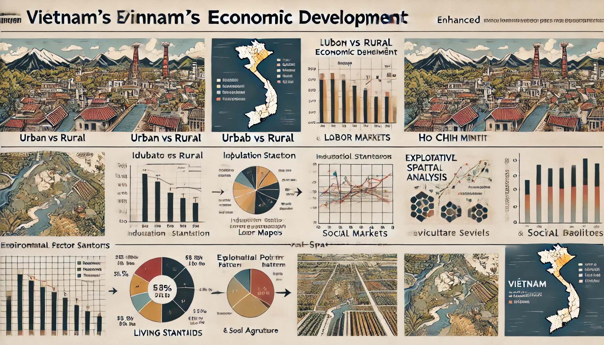

Project Proposal
Project Proposal: Industrialization, Urbanization, and Their Socio-Economic Impacts in Vietnam
1. Motivation
Vietnam’s rapid industrialization and urbanization have transformed its economy and society, positioning the country as a key player in global manufacturing. However, these shifts come with challenges, such as regional disparities, urban congestion, environmental degradation, and changes in labor markets. This project seeks to analyze the socio-economic consequences of these processes, providing a multi-dimensional view of how urbanization and industrialization are reshaping Vietnam’s economic and social landscape.
Key reasons for this project:
To investigate how urbanization is affecting Vietnam’s economy and social structure, particularly the growing gap between rural and urban areas.
To explore the transformation of Vietnam’s labor market from agriculture to industry and its impact on employment and living standards.
To analyze the environmental costs of industrialization and how they impact agricultural regions.
2. Problems or Issues Addressed
As Vietnam continues to urbanize and industrialize, several key issues have emerged:
Urban vs Rural Economic Shifts: Economic development is uneven, with urban centers like Hanoi and Ho Chi Minh City driving growth while rural areas lag behind. There is also a significant migration from rural to urban areas, leading to depopulation of rural regions and urban overcrowding.
Industrial Sector Expansion: The industrial sector is rapidly expanding, but this shift from agriculture to industry brings new labor market challenges, including wage disparities and potential job insecurity.
Living Standards and Social Services: The rapid pace of urbanization has outstripped the development of infrastructure and social services, leading to gaps in healthcare, education, and housing, particularly in growing urban centers.
Environmental Degradation: The industrial boom has led to environmental stress, with deforestation, pollution, and degradation of agricultural land, which is critical for Vietnam’s food security and rural livelihoods.
4. Approach
Our analysis will use a data-driven approach, combining socio-economic data from Vietnam’s national statistics with environmental and urbanization datasets.
Phase 1: Urban vs Rural Economic Shifts
Key Data: Population distribution, employment statistics, trade data, housing census.
Analysis: We will compare GDP growth, migration trends, and employment patterns in urban centers (Hanoi, Ho Chi Minh City) versus rural regions. Special focus will be given to how migration from rural to urban areas is affecting both rural depopulation and urban economic growth.
Expected Findings: Identification of key economic zones driving growth, regions experiencing depopulation, and urban areas struggling with housing or infrastructure challenges.
Phase 2: Industrial Sector Expansion and Labor Markets
Key Data: Employment statistics, industry-specific growth data, enterprise numbers.
Analysis: This phase will examine how the industrial sector is expanding, identifying fast-growing industries and their geographical concentration. We will analyze labor market trends, focusing on the shift from agriculture to industry and the impact on wages, job security, and labor conditions.
Expected Findings: Insights into Vietnam’s role as a global manufacturing hub and the socio-economic consequences of rapid industrial growth.
Phase 3: Impact on Living Standards and Social Services
Key Data: Education, healthcare, social services data, housing statistics.
Analysis: We will assess the impact of urbanization on social services and infrastructure, examining gaps in healthcare, education, and housing availability in urban versus rural areas. This will include an analysis of how living standards have been affected by rapid urbanization and industrialization.
Expected Findings: A clearer understanding of gaps in urban infrastructure development and the challenges associated with ensuring sustainable growth in rapidly expanding urban centers.
Phase 4: Environmental Stress and Agriculture
Key Data: Environmental reports, agriculture production statistics, forestry and fishery data.
Analysis: This phase will focus on the environmental impacts of industrialization, particularly how it is affecting agriculture and rural ecosystems. We will examine deforestation, pollution levels, and water resource degradation in key agricultural regions.
Expected Findings: Identification of the key tensions between industrial growth and environmental sustainability, and potential impacts on Vietnam’s agricultural sectors.
5. Early Prototypes
Prototypes:
Urbanization vs Rural Migration Maps: Visualizations showing population migration patterns from rural to urban areas and how they correlate with regional economic performance.
Industrial Growth by Sector: Interactive charts showing which industries are growing the fastest and their geographical distribution.
Environmental Impact Visualizations: Graphs and maps showing deforestation, pollution, and water resource stress, particularly in agricultural regions.
